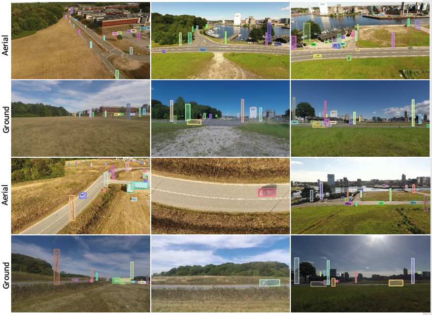
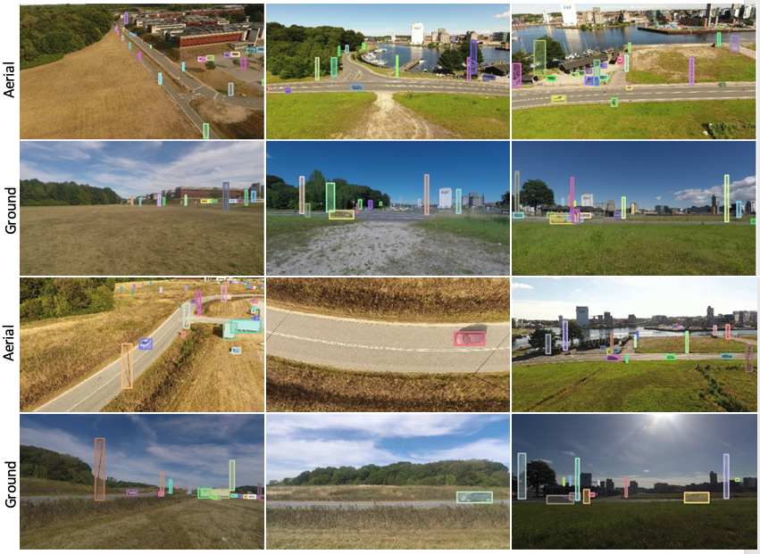
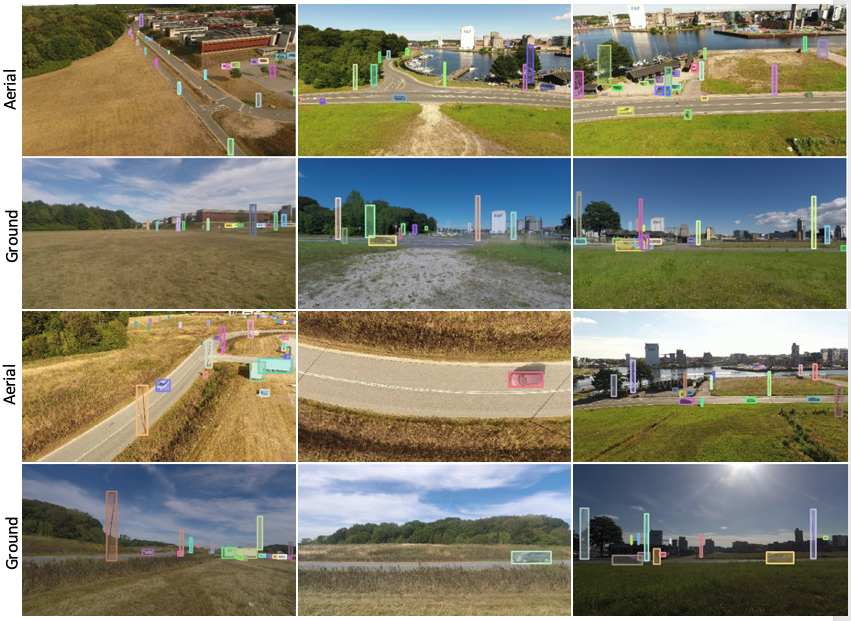

Sample Frames
 

Different sample scenes (with annotation) from our dataset; the first row is the aerial-view, second
row presents the same scenes from a ground camera. Similarly, the third row is the aerial-view, and the fourth
row presents the same scenes from a ground camera. Some scenes have a dense
object annotations, while some scenes have very few object annotations. This high variance in object
distribution across different scenes in MAVREC is complementary to datasets like VisDrone where object
detection is relatively straightforward due to their biased object distribution (dense), reflecting its
demographic characteristics.

Different sample scenes (with annotation) from our dataset; the first row is the aerial-view, second row presents the same scenes from a ground camera. Similarly, the third row is the aerial-view, and the fourth row presents the same scenes from a ground camera. Some scenes have a dense object annotations, while some scenes have very few object annotations. This high variance in object distribution across different scenes in MAVREC is complementary to datasets like VisDrone where object detection is relatively straightforward due to their biased object distribution (dense), reflecting its demographic characteristics.